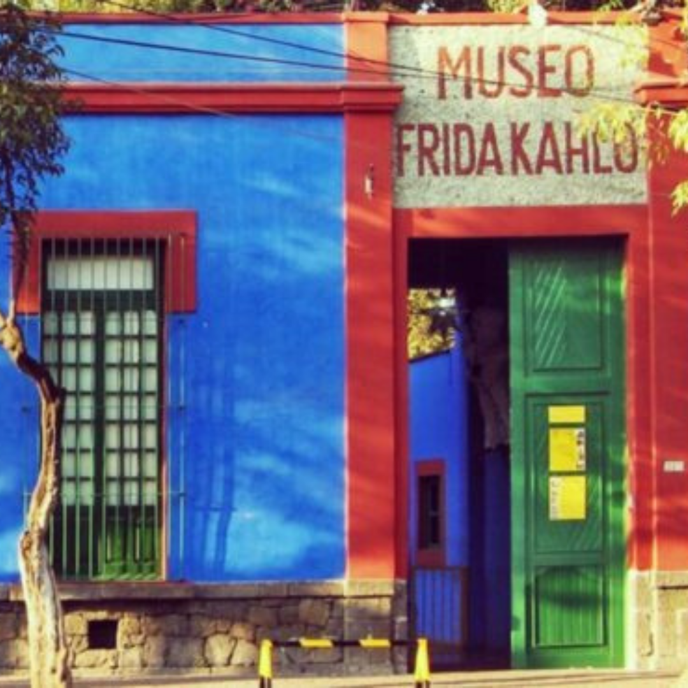

Unos cuantos piquetitos
Uma das obras mais famosas da pintora mexinaca, foi inspirado em umas história que leu no jornal. Um homem matou a esposa a facadas, na delegacia, deu um depoimento em que disse: "Foram apenas algumas facadinhas".
Hospital Henry Ford(A cama voadora)
Obra inspirada na propria vida, pintou após sofrer um aborto. Em primeiro plano um feto de menino, o tão desejado Dieguito, que Frida nunca teve.

El Rebozo
Se engana quem acredita que os xales usados por Frida eram simples pecas de vestuario. El Rebozo, era o nome do xale, e teve papel fundamental na revolução mexicana, já que mulheres e homens usavam pra transportar armas discretamente.

